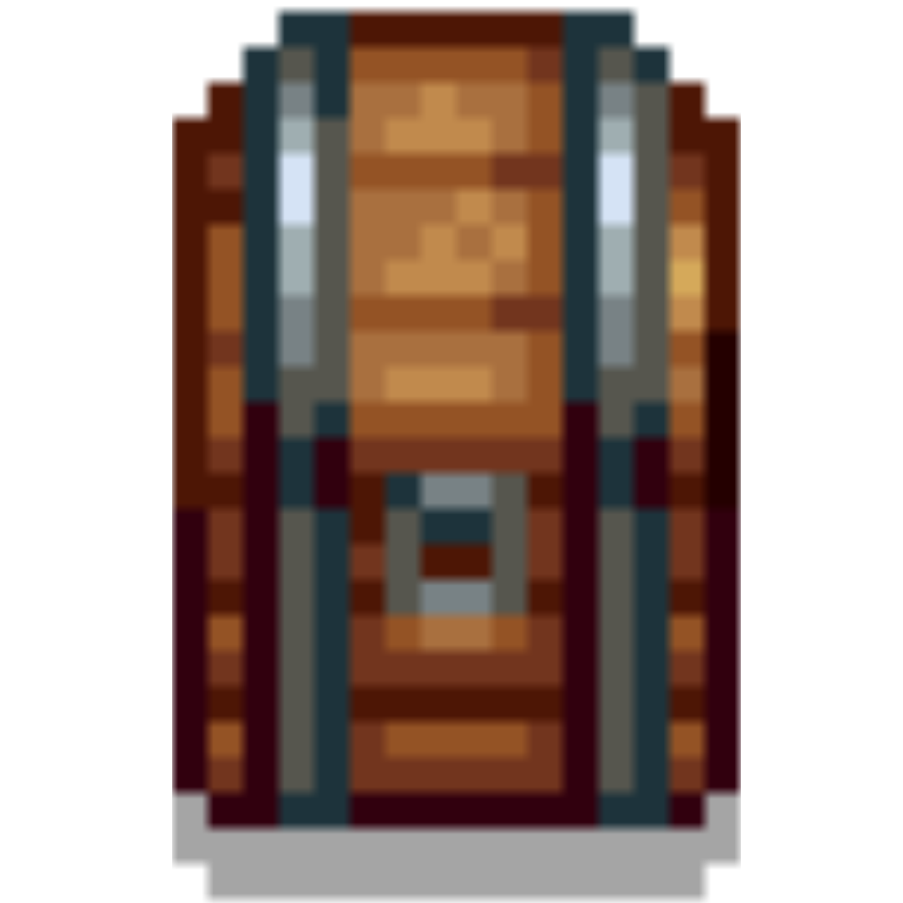
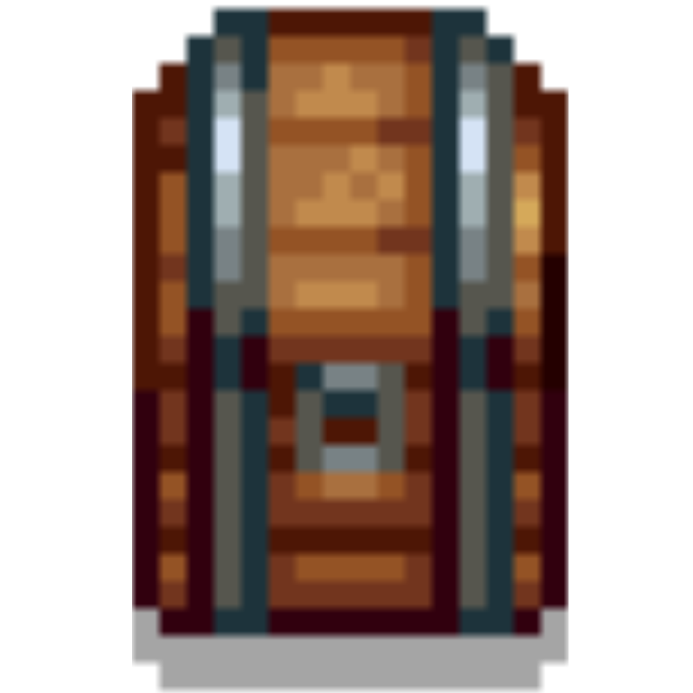

Web Presentación Stardew Valley Alan Alcañiz
MINA
La mina en Stardew Valley es una de las áreas más emocionantes y desafiantes del juego. Se encuentra al noreste de Pelican Town y ofrece una mezcla de minería, combate y exploración. Consta de 120 niveles, divididos en secciones temáticas, cada una con enemigos, recursos y desafíos únicos.
- Minerales y recursos: Puedes recolectar piedras, minerales como cobre, hierro, oro y gemas preciosas que son esenciales para mejorar herramientas y fabricar objetos.
- Enemigos: La mina está habitada por criaturas como babosas, murciélagos y golems que debes derrotar para avanzar.
- Herramientas: Necesitarás un pico para romper rocas y una espada para defenderte de los enemigos.
- Cofres de recompensa: Cada ciertos niveles encontrarás cofres que contienen herramientas, armas o accesorios útiles.
- Ascensor: Permite guardar el progreso cada 5 niveles para regresar rápidamente a esos puntos.


 
